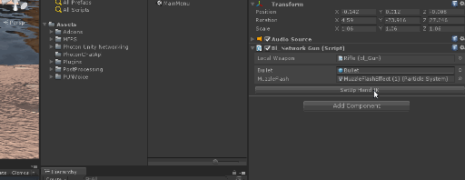

MFPS 2.0 - Version 1.4
is a advance multiplayer first person game kit for start develop your own online fps game, this kit include all the basis and some advance systems that all multiplayer shooter require, this game kit is very polished, using last Unity technologies with high efficiency and performance, great and professional UI using UGUI, player mecanim animations, you have a lot of options to customize to your taste and needed, using Photon Unity Networking as network solutions, you have 3 different game modes in the core of the kit: Free for All, Team Death Match and Capture the Flag also have 4 player classes.
if you have purchase MFPS 2.0 from Lovatto Studio web site store, please contact to lovatto in the forum with your account and order number for you can be added to the group and you can download updates and receive support.
Get Started
Require:
Unity3D 5.6++
Photon PUN 2 v2.7++
Started steps:
Video:
- Download and Import https://assetstore.unity.com/packages/tools/network/pun-2-free-119922
- Setup Photon PUN (see section)
- Import MFPS 2.0 package
- Add tags and layers.
- Add scenes in build settings.
- Ready to make next gen FPS!
SetUp PUN
How to Obtain Your App ID
Step 1: Register a Photon Cloud Account
Simply go to our site and submit your e-mail-address. After signup is completed you will have the "Free Plan", which is an app with a maximum of 20 CCU.
Already have an account? You can directly proceed to the next step ...
Step 2: Get your Photon Cloud AppId
The Cloud AppId is a generated identifier for your Photon Cloud application. It's used when an application client connects and separates your users from anyone else.
Get it from your application dashboard. You need to click on the AppID value to unhide it and select it.
Step 3: Paste your App ID in your game code
Once you have your own Cloud AppId, you can use it to connect to Photon Cloud and your application.
Game Data
MFPS 2.0 have a scriptable object that store some basic options for each developer can set up the game to they neededs and taste, here explain for what is and what does some of options that are on the data (due some the name are self explained):
- You can find the "GameData" in the MFPS Resources folder:

- Score Per Kill: Amount of score that give to a player that reach a enemy kill.
- HeadShotScoreBonus: Amount of score that give to a player that reach a enemy kill by Head Shot.
- Self Grenade Damage: can player get damage by his own grenade?
- Bullet Tracer: show a tracer effect on bullets? for optimization is not recommend active this.
- Drop Gun On Death: players drop the gun when die for other players can pick up it?
- Can Change Team: players can change team in middle of match?
- Kill Cam static: stick the kill cam camera to the head player or use orbit kill cam?
Room Options
When player host a room has several options to customize it like: Max Player, Game Mode, Round Time,etc.. you can set up these available options:
- Open 'MainMenu' Scene and in 'bl_Lobby' script you will see the 'Room Options' sections:
in these list are the availble options for customize a new room:
Max Player: The maximun players that can join to the room, in a team base game mode the max player per team is the half of the max player selected example Max Player = 8 = 4 vs 4 team.
Room Time: The time per round in seconds.
Room Kills: The Max kills to reached per match.
Max Ping: The maximun ping that a player can have to join or stay in the room.
Teams
On MFPS there are various game modes that use Team systems like CTF (Capture the Flag) or TDM (Team Death Match) for default these teams are "Delta" and "Recon" you can modify these team name and representative color, for do it go to "Game Data" in find the "Team" section:
here you can change the Team Name and Colors.
Lobby Chat
MFPS 2.0 include a lobby chat system, for players can communicate between mean search or wait for join to a room, this chat use Photon Chat plugin, for use it you need have a Photon Chat AppID (it's not the same that Photon PUN AppID), you can get this appid from your photon dashboard:
Get your AppId from the Chat Dashboard after free signup .
when you have your Chat AppID, assign it on the PhotonServerSettings:
ID also be sure that you have "UseLobbyChat" enable on "GameData" (in MFPS Resources folder).
Create new level
If you want add a map / scene for play, this is really simply, you only need add some prefabs to your ready made design map.
Video tutorial: https://www.youtube.com/watch?v=XabR4NGgJRI&t=191s
1 - Design your level
- You can create a new scene and design the level or if you already have a map done simple create a prefab of it,
add all the require object as child of 1 parent for make only 1 prefab, example: create a new GameObject in hierarchy called "Environment" and put inside it all other models, prefabs, lights, etc... and make a prefab of it.
2 - Duplicate example level
This is a simple way to create a new level to work with MFPS, instead of add all the MFPS 2.0 in your scene map, simple add your design map to a duplicate working scene of MFPS, for this go to (Project View): MFPS -> Scenes -> ExampleLevel - duplicate this, select the scene in project view and press Ctrl + D (on windows), open the new duplicate scene "ExampleLevel 1".
3 - Add you map prefab
In the new scene (duplicated) delete the game object called "Environment":
and add your map design prefab that you create before.
4 - Create Spawn Points
After you add you map you will need also create spawn points and move some things, for create spawn point simple create a new game object in hierarchy:
and add "bl_SpawnPoint" script on it:
positioned that spawn point in your map and assign for what team is:
5 - Save the scene
After you finish with the spawn points, save the scene and add it to the 'Build Settings', then go to 'MainMenu' scene and in Lobby -> bl_Lobby script in the 'Level Manager' section you will see a list, add a new field on this list and fill the info:
Name: The name to display in room list this can be wherever you want called it.
SceneName: This is the real name of scene, the same as apear in build settings, this is internal use only.
Preview: a sprite preview of map.
6 - Finally you need bake a "Navmesh" for this scene in order to the bots can move around the map, if you don't know how to do it, check the offical unity tutorial:
Change Player Model
in order to see the new tutorial go to (In Editor)MFPS -> Tutorials -> Add Player.
Video tutorial: https://www.youtube.com/watch?v=zbkqIf_eux0&t=1s
Require:
Rigged player model
Model and Animations set as Humanoid
Ragdoll prefab of the player model.
Notes:
Since Beta 5 player prefabs are assigned in 'GameData' (in Resources folder) instead of bl_GameManager.
Add Weapons
If you want add a new weapons:
1 - Create the weapon info:
- Go to GameData (in Resources folder) in "Weapons" section is a list called "All Weapons", Add a new field to this list
and filled the information of this new weapons Where:
Name = The name that will be show in UI and kill feed.
Type = what type of weapon is this?
Settings = the statistics of weapon
PickUp Prefab = the weapon that will be throwed when pick up other gun, you should create this.
Gun Icon = the icon of this weapon.
2 - Add the weapon to the player
- Now that we have the info of new weapon, we need add the weapon model to the players, for it drag one of player prefabs (from Resources folder, note that you need do this for each player prefabs) in hierarchy, open it and go to MPlayer -> Heat -> Mouse -> Animation -> Main Camer -> Weapon Camera -> TilEffect -> WeaponManger -> * here you will see all the weapons (as children of Weapon Manager), duplicate one of these as recomendation duplicate one of the same type of weapons that is your new weapons example if your new weapons is a rifle duplicate the rifle so save a litle work.
in the new duplicated weapon change the information of bl_Gun script attached:
Gun ID = select the name of new gun that you created before (note that this list is not the same as the weapon type, is the list of weapon info from GameData)
Aim Position = (do this after add the new model) for get this you need move the new weapon (Rifle (1) in the image) from editor and put right in the center copy the position from inspector and paste in bl_Gun then set the weapon again to the default position.
FirePoint = Create a new Game Object under the new weapon and put it exactly in the front of barrel of weapon (is not require if the weapon is a knife) and put this new object in the "Fire Point" variable.
SoundsReloadByAnimation = set true only if you play the sounds by animation event, set false if you want assign the sounds by script.
3 - Change Weapon Model
Now we need replace the weapon model, due the duplicated still contain the model of duplicated weapons we need delect this but before delecte we need save the muzzle flash, click in the muzzleflash in bl_Gun and drag out side of weapon model that we will delete, then delect the model.

- Now drag you new weapon model under the the new weapon object (Rifle (1)), be sure that your new model is market as Legacy mode in Animartion type, reset the position of model under the parent (Rifle (1)) to be position = 0,0,0 and rotation = 0,0,0.
- Now move the Rifle (1) (not the model) to be in front of camera where you want to the default position will be.
- in the new model under Rifle (1) (where Animation component is attached) add these scripts: bl_WeaponAnim.cs and bl_WeaponMovement.cs:
- Now in bl_WeaponMovement we need add the position and rotation that the weapon will lerp when the player run, fot this we need do the same as we obtain the position for Aim but the difference is that now we need move the model (where bl_WeaponMovement is attached) and not the parent (where bl_Gun is attached).
so simple positioned the weapon model in the position and rotation that will be when player run, then copy the position and rotation and paste in the respective varaiable: position = Move To, Rotation = Rotate To, then simple set again the weapon model to position = 0,0,0 and rotation to 0,0,0.
Finally set the MuzzleFlash and Cartrige particles under the weapon model, be sure that none of bl_Gun is missing, also change the "Rifle (1)" place holder name to your custom name.
4 - Listed Weapon in Weapon Manager
- For finish the integration we need listed this new weapon (bl_Gun) in the "All Weapon" list of bl_GunManager.cs: simple go to WeaponManager -> bl_GunManager -> AllWeapons -> in this list add a new field and add the new weapon.
- Now assign the weapon to one of the four player clases, simple set the index of new weapon in AllWeapons list in one of four slots of one of these classes:
Now you have a new weapon!
Remote Weapons
When you add a new weapon to a player you also set the model that show in the hands of player model, as FPS game there are two weapons views:
1 - Which the local player see the 'First Person Weapon'
2 - Which other players see in the player model hands 'Third Person Weapon'.
This tutorial is for how add the second one 'Third Person Weapon' after you already add the First person one.
- You need the same weapon model as in the First person view but without the hands model, just the weapon mesh.
- Go to the 'RemoteGuns' game object (in hierarchy) that is located under the Right Hand bone of player model and put the new weapon mesh under this:
- Now positioned the weapon right as you want to look in the hands of player mode:

now in the new weapon model add the script 'bl_NetworkGun.cs', now you will see that appear a field called "Local Weapon" in this field you need drag the 'First Person Weapon' of this gun, the one that you should have added before from the 'Add Weapon' tutorial:
- Now depend of type of weapon a few new variables will appear,
Bullet: (Optional) here you can add a bullet to override the local one, if you leave null the bullet from the First Person Weapon will be used.
MuzzleFlash: here the particle system (not prefab) that will play when weapon fire is called, the particle system should be under the weapon mesh.
Left Hand Position: from version 1.1 left hand position is controlled by IK to achieve a better effect and more realistic kinematic, for use this feature you simple need set up the position:
- in the bl_NetworkGun script click on the button "SetUp Hand IK" or "Edit Hand Position", after click this will automatically select a object and the player IK will start run in editor, so all what you need to do is positioned the selected object to the position where will be in the barrel of the weapon:

After you finish you need close the IK runner window, simple click on the button of the little window and ready.
- Now you need add this weapon to the Network weapon list, add a new field in the list 'Network Guns' of bl_PlayerSync.cs and drag the weapon here:

Ready!
Weapon PickUp
After add a local and remote weapon you also need create a prefab which will throw when die or that can be pick up:
- as Third Person Weapon you only need the weapon mesh without the hand model
- Add the script bl_GunPickUp.cs and select the correct 'Gun ID', in the info set the default ammo that this weapon contain.
- Add also a Sphere Collider as Trigger and a Box Colider (Trigger as false), the Box Collider should fit the weapon bounds limits and the Sphere Collider Trigger represent the are where players will detect this weapon for pick up.
- Now set the Layer of this as 'Ignore Raycast' and create a prefab of this:
- Finally go to the weapon info of this gun in 'GameData' and assign the prefab to the pick up field:
- Ready!.
Hands Textures
Normally the player model of each team have different texture and also the first person hands have different textures, so for this there are a easy method in MFPS for you don't need apply that texture in each weapon for each player, what you only need is that all weapons for each player shared the same hands material.
so then you need do this:
1 - go to the player prefab -> bl_PlayerSettings -> Hands ->
here you need set the material for hands and sleves (if needed) and also the texture for each player hand,
in the bottom are a option 'Use Effect' this enable a blinking effect after player spawn for 5 seconds, the colors are between the blink effect will do.
Player Animations
MFPS 2.0 use Mecanim for player animation so change animations clips is really simple as drag and drop, you only need a humanoid animation clip and the assign in the Animator controller:
1 - Locate the required animation
- First to all you need find the animation that you want replace, example you want change the "Rifle Reload" animation,
you need find it in the player Animator Controller tree view, go to (Project View) MFPS -> Content -> Art -> Animations -> Player ->
With the Animator Controller select, open the Animator Window (Window -> Animator), on the Animator view you need figure for what part of player body is this animations Bottom or Up body (Lens or Arms), example "Rifle Reload" is for Arms so is for Upper Body, go to "Layers" - and select "Upper" layer, there you will see various state machine with the name of the weapon to which it belongs, select the weapon:
double click on the state machine "Rifle" and you will see other states that represent the weapon state, as this example we are looking for "Reload" state, select the Reload state and in the inspector view you will see the settings of this state specifically the "Motion" field, in this we need drag / replace the animation clip with the new one:
ready, you have replace the animation, for all other animations is the same steps, you also can play with other settings of states like speed, trasittion time, etc... you may need have basic knowledge of Mecanim for not break the tree system.
AI
In version 1.1 we introduce a AI agent with shooter behaviour, we this player can play a match with bots and other players, this is essential when there are not enough real players.
the AI is synchronize over network, can kill real players and other bots as well, they can fire with rifle and throw grenades to the target, also there is a simple but useful 'Safe Point / Cover Point' system, that help bots cover in certain situations.
How to play:
- At the moment the party with bots is only available on FFA mode, when you select the FFA game mode in the lobby a toggle called "with bots" will appear, select this to add bots to the match or not.
Number of Bots:
- for default an party have 6 bots as maximun but you can add or remove some, for change this simple go to MFPS -> Content -> Prefabs -> GamePlay -> AIManager -> this prefab have attached a bl_AIManager script, in this script you can chnage the maximun bots per party in the variable "Number Of Bots".
Cover / Safe Points:
- The AI system count with a simple safe point system, basically this is use for bots to get reference points of where cover in certain situations like when is ramdon walking and get hit by a unkwowing enemy, these points are transforms that you positioned over the map manually.
Add Cover Points:
- The example level have various AI cover points but when you add a new map, these will be incorrect positions, so you will need to re-positioned it, or if you want add or remove a cover point:
Go to the AIManager object in the hierarchy (of the map scene), under this you will see alot of childers called "CoverPoint" so if you want change the positioned just move the transform, you can active the gizmos draw on bl_AICoverPointManager (on AIManager) -> Show Gizmos, if you want a new cover point simple duplicate one of these transforms and ready!
Voice Chat
From version Beta 6, MFPS 2.0 support Photon Voice for enable team voice chat, for enabling this feature you need a third party plugin Photon Voice, you can download for free from Asset Store.
When you have imported it like PUN you need a 'App Id' for it, you can get it from your Photon account, more info here: https://doc.photonengine.com/en-us/voice/current/getting-started/voice-for-pun
After this the feature will be available in game, for default the 'Auto voice detection' is enable, players can set 'Push to talk' in the setting menu in game, also can mute the voice chat.
For change the icon that appear in remote players when this is trasmitting voice, you can do it in bl_DrawName.cs in the player prefabs.
WebGL
-Due Photon Voice use only UDP, it can't be use in WebGL platform (cuz Web Sockets), and due the asset store pack already have the Photon Voice package if you want export to this platform you need delete the folder "PUNVoice", if you delete this folder and you are not in WebGL in build settings you can get some script compile errors, you fix these switching to WebGL platform.
Game Staff
you may want to highlight working game development members with a badge on their behalf for example "Lovatto [Admin]" with a different color that normal players, so other users can see that is a staff member on the game, on MFPS 2.0 there are a simple way to do this and you can set up right on the inspector.
Go to Game Data and find the "Game Team" section:
in this list you can add much member as you want, with a simple settings to set up:
UserName: the name that the staff member need writte to access to this account.
Role: The staff rank / role on the team.
Password: when try to sing in with this account name a password window will appear to writte the password (with other names will not appear), so normal player can't fake identity.
Color: The color with the name text will appear in the game.
Draw Name
In MFPS the player name show to other team players above the head of our player, a simple text, but you can modify the style of this, like color, font, position offset, size,etc...
simple go to the player prefab (in Resources folder) and on the root object in the script bl_DrawName there are a GUIStyle field called "Skin" if you open this you will see all the gui style options:
here you can change the font, text color, size,etc...
for change the position offset you can do it in the variable called "Content Offset" but for see the result you can do it in run time (with other player from a build and you see from the editor).
Health Bar.
From version r1.0 you can show a health bar above the team mate players, all the logic of this is in bl_DrawName.cs script attached to the player prefabs (above screenshoot), from the inspector of this script you can change the Bar Texture, height and color.
but if you don't want to show this health bar you can disable in GameData -> ShowTeamMateHealthBar
Bullets
in MFPS bullets are pooled and like all other pooled objects they are listed in bl_ObjectPooling script in the GameManager,
so in bl_Gun you assign only the "Pooled Name".
You may want to add a new bullet for a spesific weapon, let's say you want add a different Trail Render, well for do it you can do this:
- Duplicated a bullet prefab:
Select one of the existing prefab (MFPS -> Content -> Prefabs -> Weapon -> Projectiles -> *, right click -> Duplicated.
Then make the changes that you want to this prefab and after this add a new field in bl_ObjectPooling (it is attached in GameManager object in room scenes), in the new field drag the bullet prefab and change the pooled name:
then open a player prefab and select the FPWeapon that you want assign the bullet, in the bl_Gun script of that weapon, write the pooled name of the bullet in the field "Bullet".
Apply changes to the player prefab and ready.
Kit System
MFPS have a simple but functional 'Kit System' where players can pick up Ammunition or Medic kits in the map during the game, for default player can throw 3 kits to pick up with 'J' or 'H' key, the kit depent of the player class.
Change the Key to throw kits:
- in the root of player prefabs (in Resources folder) you have a script called 'bl_ThrowKits" there you have thow Key propierties called 'MedKitKey' and 'AmmoKey' there you can set the key for throw each kit.
Change the model of the kits:
- You can find the kits prefabs in: MFPS -> Content -> Prefabs -> Other -> *
- Select the kit that you want change the model (MedKit or AmmoKit) and drag to the scene hierarchy.
- Replace the mesh with you new model and save the prefab.
Change the model of Kit deploy indicator:
- You can find the prefab in MFPS -> Content -> Prefabs -> Other -> KitDeployIndicator
Kill Zones
may be the case that there are limits in your map that you want the players not to go any further, to make sure that if the player enters one of these limits MFPS has 'Kill Zones' where if the player enters he will receive a instant kill returning it to a reappearance point.
to add a kill zone simple add a object with a 'Box Collider' where the Box Collider represent the zone where detect if the player is in the kill zone, then add the script bl_DeathZone.cs script, setup the time that the player have to leave this zone and the string message that will appear in screen while player is in kill zone.
Friend List
Friend List is a Photon Feature that allow to players add friends in game and know some states about then like when is online or when is in a room, this feature was implemented in MFPS 2.0 version r1.0, due this mostly is a server side logic, this is a final system (no improved on it) all that can be do it with it has been done.
Usage:
When players are in Lobby they can open the Friend List with the bottom left button "Friends", they can add a new friend simple with writte the name of the player in the input field, due it is one-way follower concept, not a mutual acceptance between players.
For default upto 25 player can be added, you can increase this limit in (Lobby scene) Lobby -> bl_FriendList -> MaxFriendsCount
Kick Vote
Kick Vote
This feature allow players start a vote to kick a specific player from the current room, before only master client could kick players, now player simple need select the user from the scoreboard and click on Kick button to start the request.
Vote Keys:
For default the keys to vote are: F1 for Yes and F2 for No, you can change these in (Map Scene) -> GameManager -> bl_KickVotation -> YesKey - NoKey
Mobile
If you are targeting to export in mobile platforms, you need some things to do before due MFPS 2.0 for default is not optimize for mobile platforms and also don't have mobile control for default,
So first thing you need is Mobile Control, for this there is already an addon specifically for MFPS 2.0, which contains all the necessary buttons, but also you can integrate your prefer system if you want.
Then you can start to made the optimization work, you should remove the Post-Process effects, you can do it simple remove the script from the Main Camera of player prefabs, MFPS 2.0 disable some systems when is on mobile platforms like weapon smooth movement.
One of most import thing to do is modify the texture quality, for mobile the maximun size of a image should be 512, more information for mobile optimization can be found here: https://docs.unity3d.com/Manual/MobileOptimizationPracticalGuide.html
Language
PostProcessing
MFPS using the new Unity post-processing stack for image effects, these give a AAA graphic aspect to the game but also a considerable spending in graphic resources, so use it depent of your criteria and the destination platform, PC and console platforms normally can handle with it, but the mayor mobile devices will have problems so is not recommeded use for it.

Disable Post Processing:
Drag player prefabs located in the Resources folder in the scene hierarchy.
Go to the Main Camera of player prefab (Player -> Heat -> Mouse -> Animations -> MainCamera)
There you have a script called "PostProcessingBehaviour" (for default), order to remove the effects simple remove this script and save the player prefab, removing it will prevent to compile the dependencies in the build = reduce file size.
Set up Effects:
If you want modify the effects of player camera, go to MFPS -> Content -> Prefabs -> Effects -> PlayerProfile
there you have all the post processing effects, you can enable or disable, although some effects can active /desactive in the setting menu in game,
you can see the changes in real time, play in editor and modify in inspector (while play) or instance a player prefab in hierarchy.
Add ons
MFPS 2.0 have a bunch of features on core, but still missing some important features that almost all FPS have like e.g.: Mini Map, Login System, Level System, Localization, etc... if I tell you that MFPS have all these? yes MFPS have extensions / add ons with which you can integrate all these features.
you may wonder why they are not added by default?
basically it is to maintain a relatively low price for the main core package, if all the addons are added by default the price of the package would rise to at least $250.00 for being a complete set, so we decided to add the essential features to the core and let developers choose which extra extensions they want to integrate.
You can purchase these addons and import the package in the MFPS 2.0 project, there is the list of available add ons for MFPS 2.0:
ULogin Pro
- This is a must have extension if you develop a serious game, with this players will can create account for authenticated and save they statistics like kill, deaths, score, play time,etc.. also with this you will can ban players (by IP) for prevent to play again, also comes with a Ranking where you can display the Top 10, Top 100 Top 1000, etc... an Admin panel where you can see some statistics of game.
Link: https://www.lovattostudio.com/en/shop/network/ulogin-pro/
Mobile Control
- this add on have all necessary for control input of MFPS 2.0 in mobile platforms, using the standard touches controls of FPS games allowing gameplay on current-gen iOS and Android devices.
Link: https://www.lovattostudio.com/en/shop/addons/mfps-mobile-control/
Class Customization
- allows the player to set personalized way weapons of each class (primary, secondary, Knife and grenade) in run time using a dedicated menu.
Link: http://https://www.lovattostudio.com/en/shop/addons/class-cutomization/
Customizer
- Allow players to change the attachments of weapons in a menu, they can change things like: Iron Sight, Suppressor, Magazine, etc... changes will be visible in the network gun too.
Link: https://www.lovattostudio.com/en/shop/addons/customizer/
Kill Streak Notifier
- Show a icon for each kill, a different icon for each kill in a streak, also with a voice sound that will noticy the player the state of hes streak, the icon is showing with a UI Animation and hide automatically after a certain seconds.
Link: https://www.lovattostudio.com/en/shop/addons/kill-streak-notifier/
Localization
- Localization allows to developers add many translation of the game as they want and to players be comfortable playing the game in their language, with this add-on locate the game is simple, you can add many languages as you want, easy addition of new sentences.
Link: https://www.lovattostudio.com/en/shop/addons/localization/
HUD Waypoint
- It is an easy but functional player navigation and indicator, based on UI system, you can show a UI that follow a object in the map, so players can be guided or know where is some object such as: ammunition or health.
Link: https://www.lovattostudio.com/en/shop/addons/hud-waypoint-add/
Player Selector
- MFPS 2.0 for default have only 2 players (1 for team) with this addons you can add the avility for players can select the player wich why they want play so you can add much players models as you want, enables a menu to select the player you want to play with, after selecting the team (in game modes per team) a menu appears to select the player model.
Link: https://www.lovattostudio.com/en/shop/addons/player-selector/
Input Manager
- if you develop for Window, Mac or Linux this is a must have addons, enabling the the ability to change the Keys in game by a Menu (UGUI) with all the keys and their functions, giving comfort to the player to choose the keys best suit for game functions.
Link: https://www.lovattostudio.com/en/shop/addons/input-manager-addons/
Bomb Defuse (Game Mode)
- with this addons you add the base and functionality of the popular game mode “Bomb Defuse / Search And Destroy" game mode system, comes with the basic system ready to play.
Link: https://www.lovattostudio.com/en/shop/addons/bomb-defuse-search-and-destroy/
Domination (Game Mode)
- Add the Domination / Covert Point game mode, where two teams try to dominate most “Points or Bases” and prevent the opposing team take them or recovers, there are 5 points on the map, teams need covert each one standing 7 seconds on it and prevet that enemy team enter to covert it.
Link: https://www.lovattostudio.com/en/shop/addons/domination-game-mode-mfps/
UGUI MiniMap
- Add the mini map system to your game, using UGUI system you can display the minimap in the screen and show the team mates icons also the enemy icons when they shoot.
Link: https://www.lovattostudio.com/en/shop/gui/ugui-minimap/
Level System
- with this add on you can show the level of player by their score, you can set up all the levels that you want and how much score the player need reach to unlock each level, the package comes with 15 example levels set up with icons but you can add as much as you need, simple to add new levels.
Link: https://www.lovattostudio.com/en/shop/addons/level-system/
Gun Race (Game Mode)
- in a all vs all mode, players upgrade their weapon by eliminating enemies, players win the match begin the first to reached and kill a enemy with the last weapon.
Link: https://www.lovattostudio.com/en/shop/addons/gun-race/
FAQ
Will add Vehicle support?
we don't have plans to add vehicles on MFPS, but we can do as custom job as freelance, just contact us for more information.
You do custom customization (freelance works)?
Yes, but normally we always are working on something so you can ask us with the details of your work and we will answer you if we are available.
Can I use the kit for commercial purposes?
Yes, you can use for commercial purposes as long as you have purchased and downloaded it from Lovatto Studio (Asset Store or lovattostudio.com) and released it as a compiled game (not release source content in any way).
Will there be a Battle Royal mode in MFPS?
I has been working in a personal game that is a FPS Battle Royal for mobiles, I used MFPS as core but I have almost rewrite the half of the system and still not finish, so if in the future I release that mode it will be a independent kit (not add-on) of MFPS, but still not sure if I'll release it.
Contact
If you have any problem, feedback or question with the kit, don't hesitate in contact us:
email: lovattostudio@gmail.com